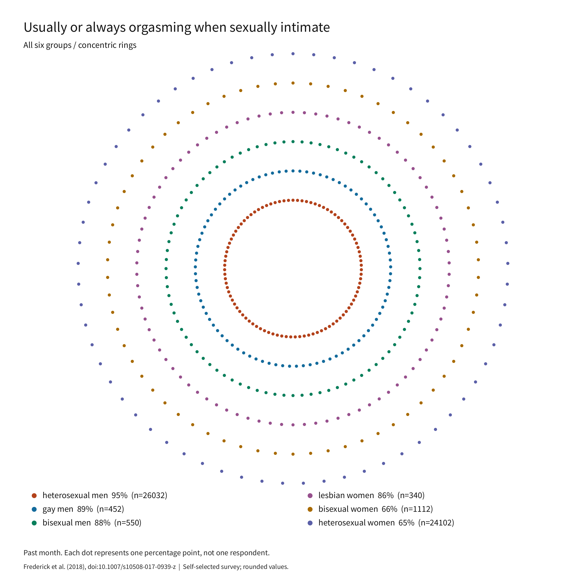
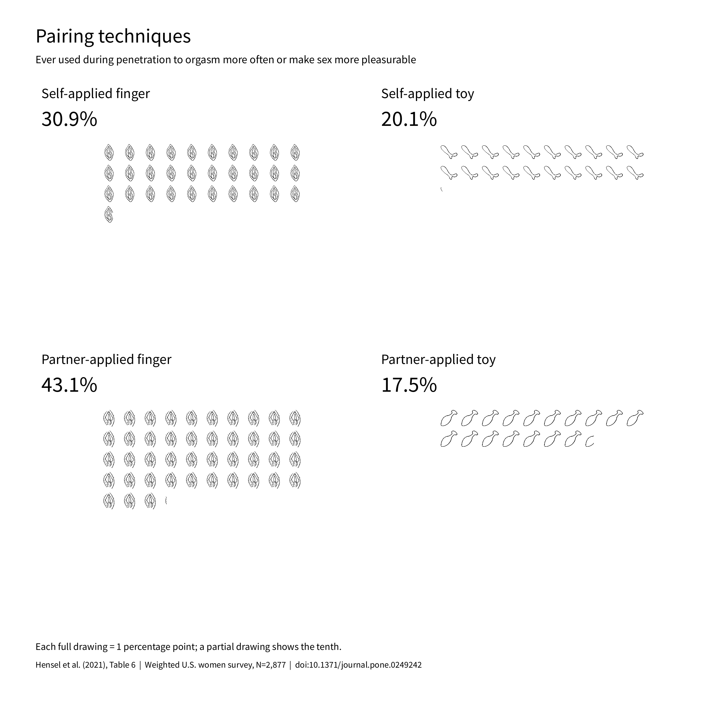
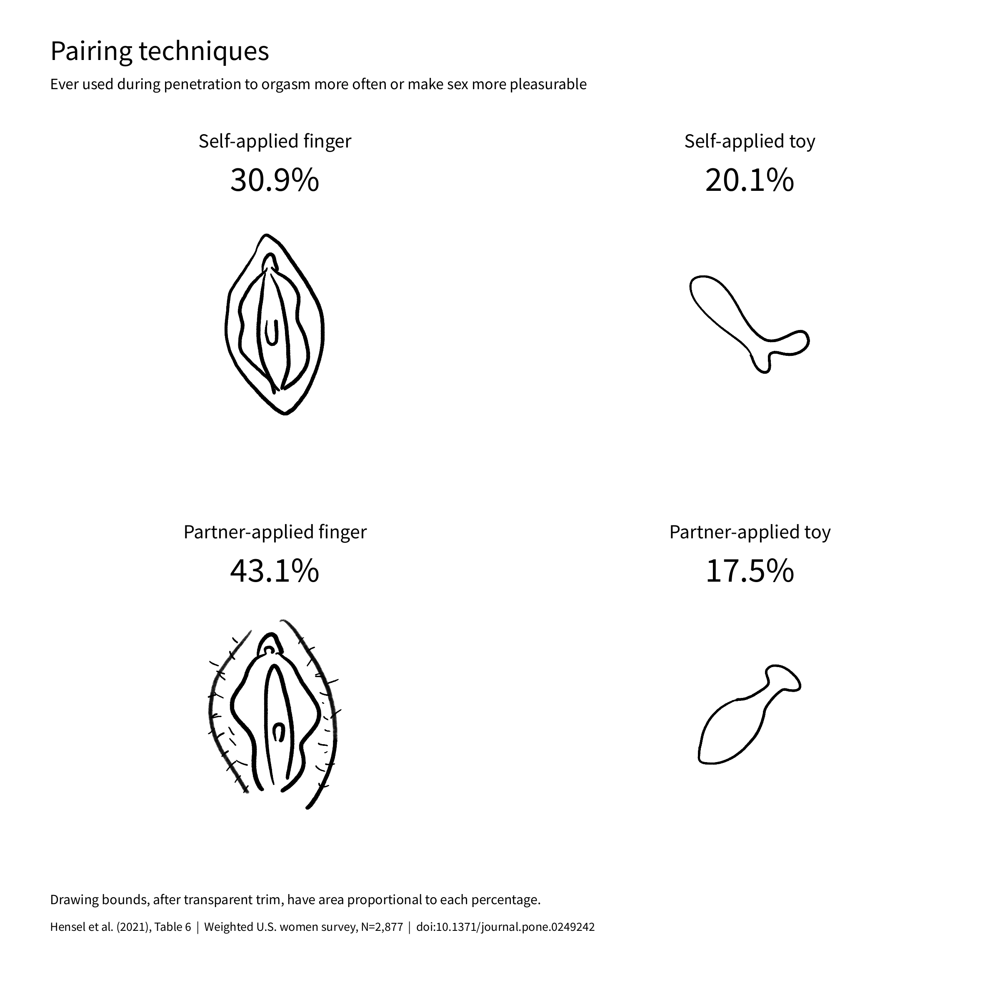
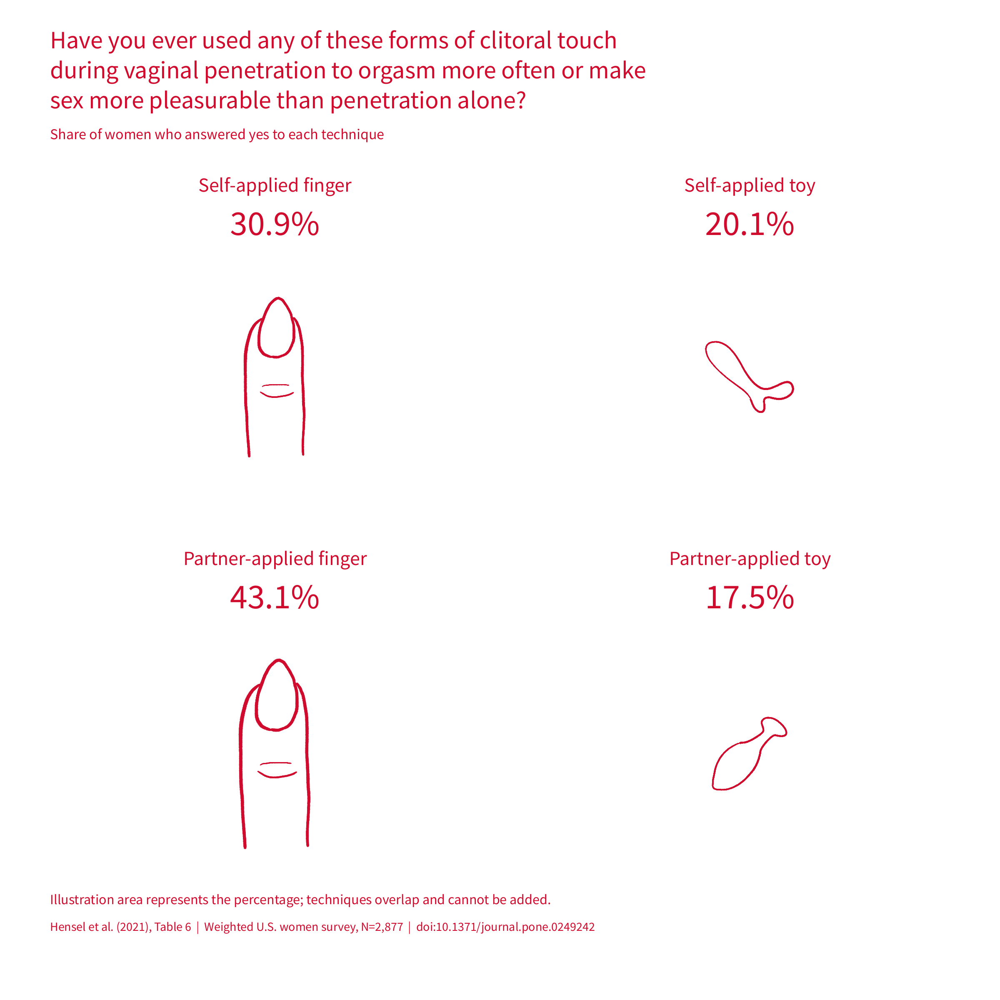
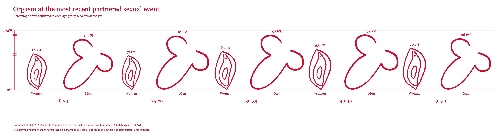
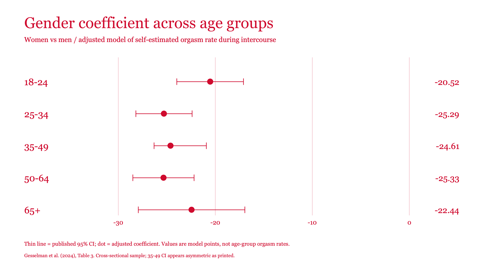

Generated images
Choose a run to see all its images. Use the navigation on each run page to move between versions.
Frederick dot images
Usually or always orgasming during sexual intimacy, by the study’s six groups. Dots represent percentage points, not respondents.




Pairing: repeated illustrations
Four overlapping technique-use percentages during penetration. These are not observed orgasm rates.


Pairing: illustration area
The same four technique-use percentages, encoded by each illustration’s rectangular bounding-box area.


Pairing: study question
The four Hensel techniques with the question made explicit, and the same slimmer finger illustration for both finger rows.


Pairing: landscape
Four equal-size illustrations in one wide row, with the study question centered above them.

Age: scaled illustrations
Herbenick et al. (2010), Table 3. The full drawings scale from 0 to each reported value; an accompanying paired-bar image uses the same data.



Age: reported percentages
Herbenick et al. (2010), Table 3. Paired bars and illustration markers for the same ten event-level percentages.


Age: adjusted model intervals
Five age-band gender coefficients with published confidence intervals. These are adjusted model terms, not observed orgasm rates.

